阿信：現在能免費拿到阿信！！咦？咱是免費的嗎！？
沖太：好像是收集活動點數什麼碗糕的就能得到！
阿信：但是伺服器會掛掉吧？
沖太：現在正是相信FGO之時！GUDAGUDA本能寺就此開幕！
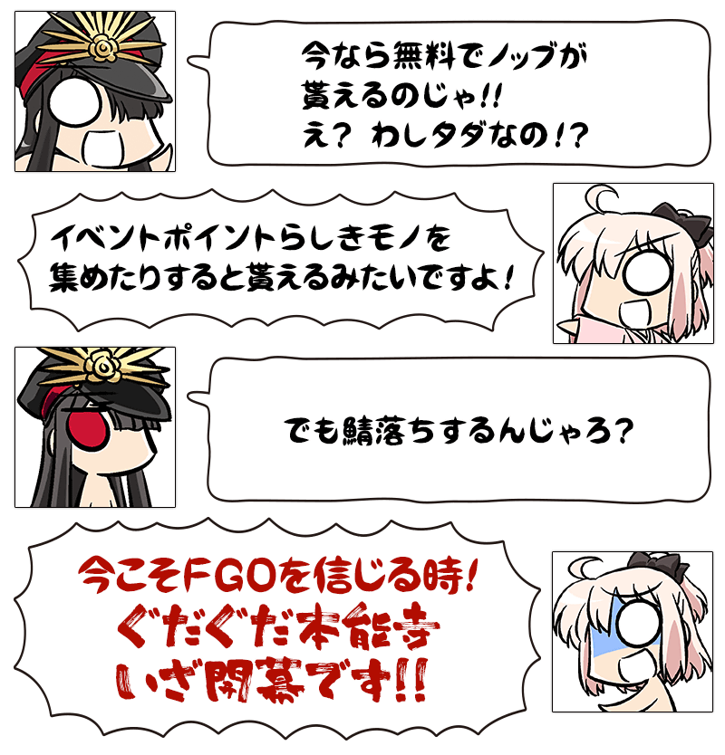
◆活動舉辦期間◆
2017年3月15日(三) 18:00～3月31日(五) 22:59
◆活動概要◆
在管理室(ターミナル)突然出現的「GUDAGUDA本能寺」，織田信長参戦！
由Fate GUDAGUDA Order的作者，容易被搞混又不熟的経験値所寫的劇本！
當然，奈須きのこ(幾乎沒)監修！
阿信：完蛋了不是きのこ。
沖太：監、監修還是十分感謝!!
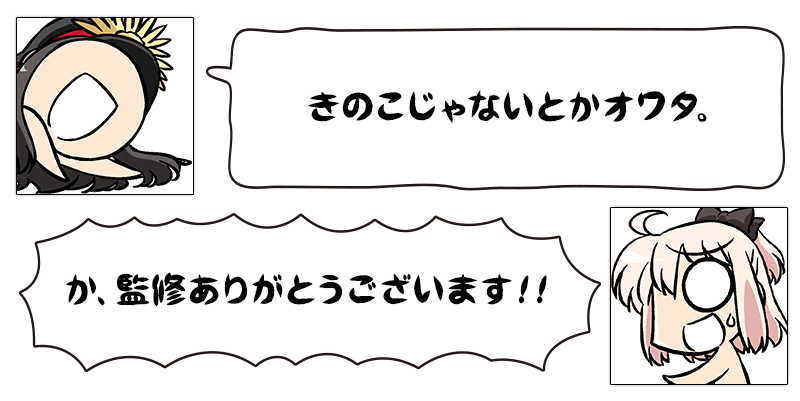
參加活動的話，活動限定Servant「★4(SR)織田信長」會期間限定加入！
在期間內收集可於活動關卡獲得的「本能寺點數」，就會變成正式加入！
最初也是最後(？)的GUDAGUDA活動，請各位積極參加！！
※本活動為於2015年舉辦的「GUDAGUDA本能寺」，調整一部份活動専用道具交換的交換數等變得容易遊玩的「輕量版復刻活動」。
※活動限定Servant「★4(SR)織田信長」及活動限定概念禮裝，與2015年舉辦時同様可以獲得。
◆参加條件◆
只有通過新手教學的Master才能參加
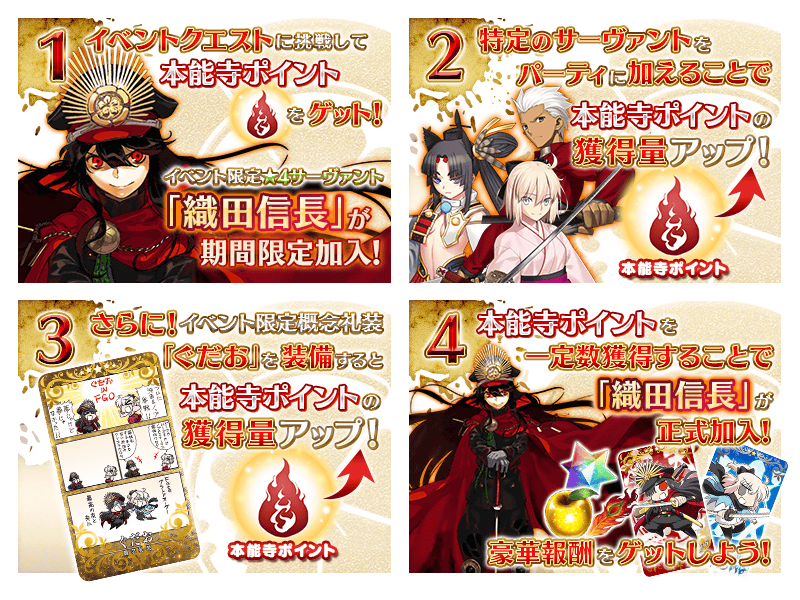
◆超值攻略方法・其1◆
3月15日(三) 23:00～3月31日(五) 22:59的期間，每天追加可獲得大量「本能寺點數」的獎勵關卡「GUDAGUDA黄金天國」。 ※3/15(三) 修正
「GUDAGUDA黄金天國」為開放後24小時消失的期間限定關卡。
1天只能挑戰1次。
※開放「GUDAGUDA黄金天国」必須通過至活動關卡「最終幕」。
◆超值攻略方法・其2◆
將特定的Servant編入隊伍的話，「本能寺點數」的獲得量提升！
【對象Servant】
牛若丸、Emiya(Archer)、沖田總司、織田信長、庫・夫林(Lancer)、武藏坊弁慶、梅菲斯托費勒斯、美杜莎(Rider)
※各Servant的增加量有所差異。
◆超值攻略方法・其3◆
裝備期間限定概念禮裝的話，活動専用道具「平蜘蛛」「曜變天目茶碗」「九十九髪茄子」的掉落獲得數提升！
另外，裝備活動限定概念禮裝的話「本能寺點數」的獲得量提升！
※請注意在各關卡的道具掉落率並非100%。
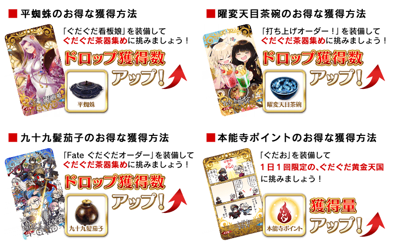
| 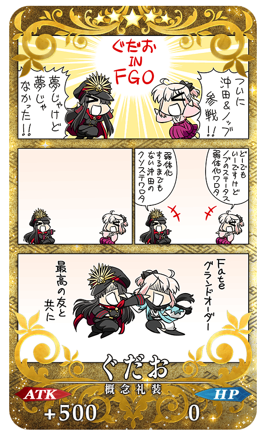 |
◆活動限定概念禮裝◆
沖太：沖田跟阿信終於參戰了！ |
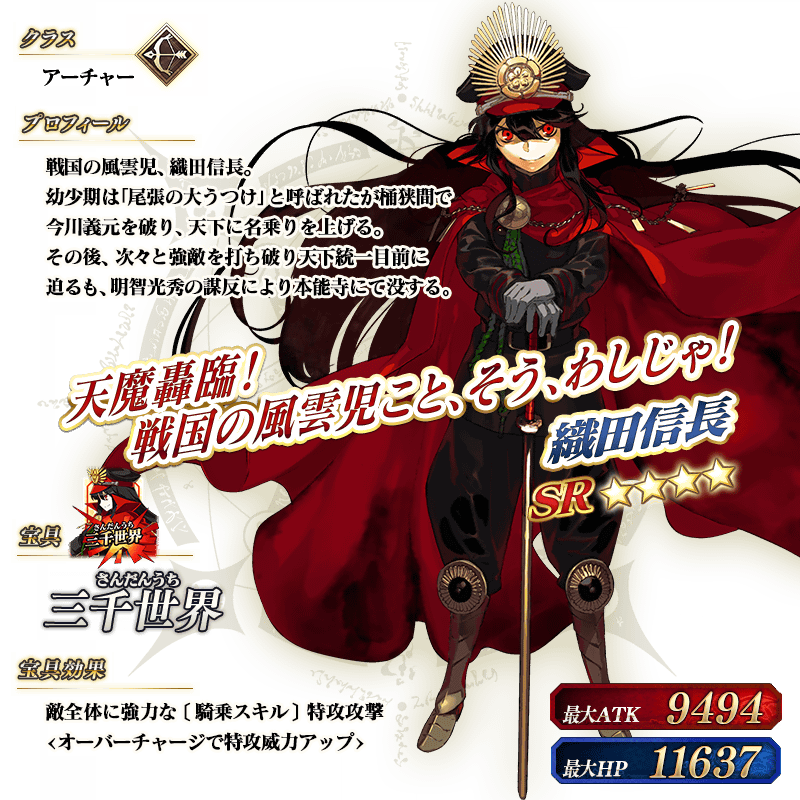
◆靈基再臨◆
使用在活動期間中的活動道具交換外無法入手的「黄金髑髏」的話，重複4次靈基再臨的話，卡面會有所變化！
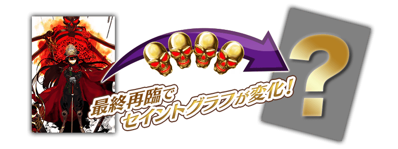
※織田信長不會隨靈基再臨使戰鬥角色的外觀變化。
|
◆取得活動期間限定・概念禮裝用EXP卡吧！◆ 做為本能寺點數的達成報酬，可大幅強化概念禮裝的EXP卡登場！ |
◆報酬獲得方法◆
「本能寺點數」每達到一定數以上，關卡結束時自動進行報酬獲得。
能獲得報酬的列表可在「活動報酬畫面」確認。
◆能用本能寺點數獲得的道具◆
|
【活動限定Servant】 【活動限定概念禮裝】 【技能強化＆靈基再臨素材】 【其他的道具】 |
◆交換方法◆
交換期間：2017年3月15日(三) 18:00～4月5日(三) 12:59
※交換期間結束後，「平蜘蛛」「曜變天目茶碗」「九十九髪茄子」會消失。
自達文西工房内的「活動道具交換」，可用活動専用道具交換以下的道具。
◆能用平蜘蛛交換的道具◆
|
【活動限定概念禮裝】 【活動限定靈基再臨素材】 【技能強化＆靈基再臨素材】 【其他的道具】 |
◆能用曜變天目茶碗交換的道具◆
|
【活動限定概念禮裝】 【活動限定靈基再臨素材】 【技能強化＆靈基再臨素材】 【其他的道具】 |
◆能用九十九髪茄子交換的道具◆
|
【活動限定概念禮裝】 【活動限定靈基再臨素材】 【其他的道具】 |
在「復刻:GUDAGUDA本能寺 輕量版」活躍Servant的一部份戰鬥動作翻新。
※只有戰鬥動作的翻新。寶具演出並無變更。
◆對象Servant◆
・沖田總司
・織田信長
◆翻新時間◆
2017年3月15日(三) 18:00～
 ※3/18(六)修正
※3/18(六)修正
◆復刻GUDAGUDA本能寺Pick Up召喚期間◆
期間：2017年3月15日(三) 18:00～3月31日(五) 22:59
以期間限定舉辦「復刻GUDAGUDA本能寺Pick Up召喚」！
完全復刻於2015年舉辦的GUDAGUDA本能寺Pick Up召喚！
在活動大活躍無誤的「★5(SSR)沖田總司」以期間限定登場！
將沖田總司編入隊伍的話「本能寺點數」的獲得量會提升。
另外、同様會讓「本能寺點數」獲得量提升的「★4(SR)Emiya(Archer)」「★3(R)庫・夫林(Lancer)」「★3(R)美杜莎(Rider)」「★3(R)梅菲斯托費勒斯」Pick Up！
※沖田總司在Pick Up期間結束後，不會追加到故事召喚。
還有，裝備期間限定概念禮裝「★5(SSR)ぐだぐだ看板娘」「★4(SR)打ち上げオーダー！」「★3(R)Fate ぐだぐだオーダー」的話，活動専用道具的獲得數會提升。
※「★3(R) Fate ぐだぐだオーダー」在Pick Up期間中，也能在友情點數召喚獲得。
Pick Up期間中，期間限定Servant、期間限定概念禮裝、Pick UpServant的出現機率提升！
10次召喚中確定1張★4(SR)以上和確定1位★3(R)以上的Servant！
※確定★4(SR)以上包含Servant和概念禮裝。
※所謂「出現機率提升」意指比同稀有度的Servant及概念禮裝出現機率更高的設定。

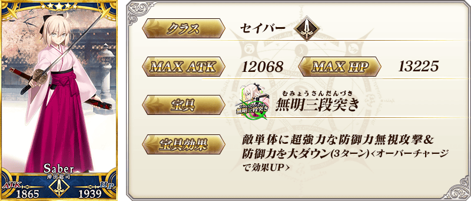

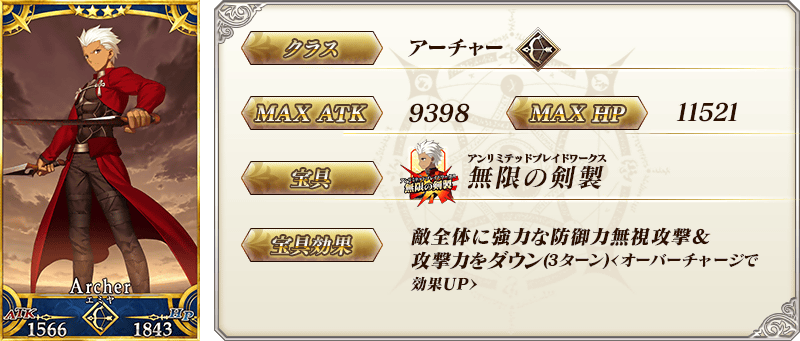

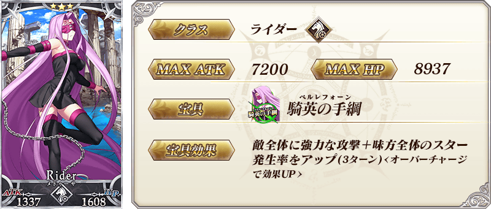

| 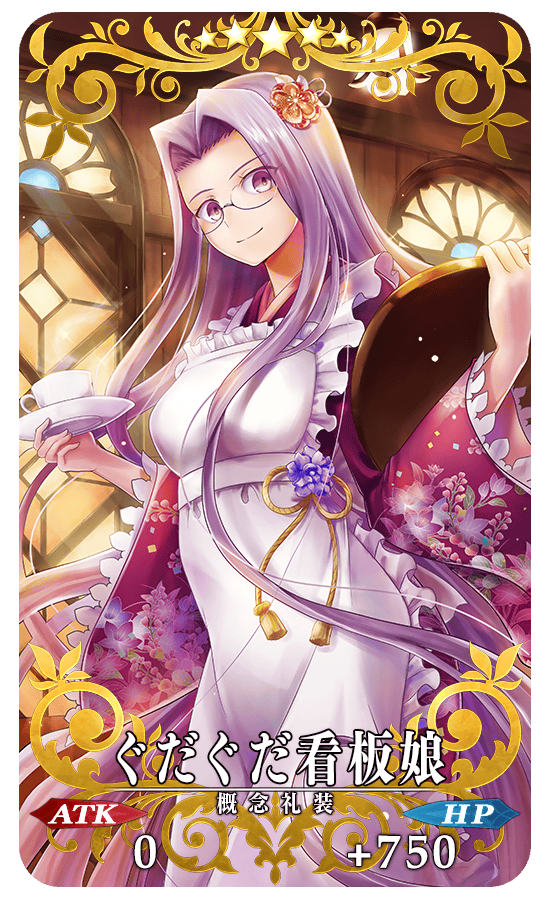 |
★★★★★SSR ぐだぐだ看板娘 ATK 0 HP 750(最大:3000) 技能 對自身賦予目標集中狀態(3回合)＆攻擊力提升60%(3回合)＋平蜘蛛的掉落獲得數增加1個【『復刻:GUDAGUDA本能寺 輕量版』活動期間限定】 |
| 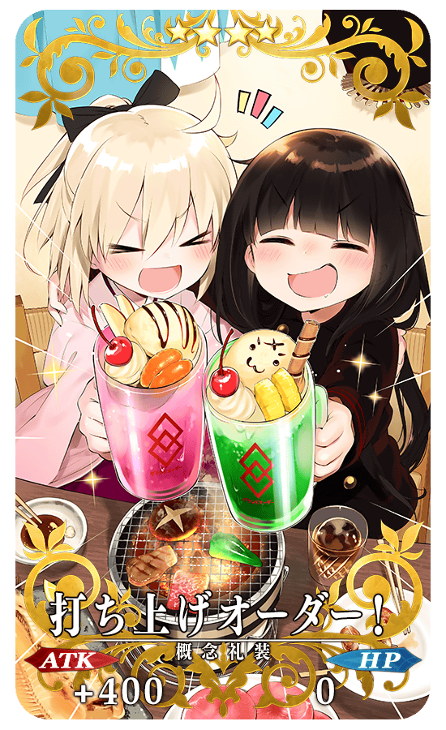 |
★★★★SR 打ち上げオーダー！ ATK 400(最大:1500) HP 0 技能 自身的Quick卡性能提升10%＆Buster卡性能提升10%＋曜變天目茶碗的掉落獲得數增加1個【『復刻:GUDAGUDA本能寺 輕量版』活動期間限定】 |
| 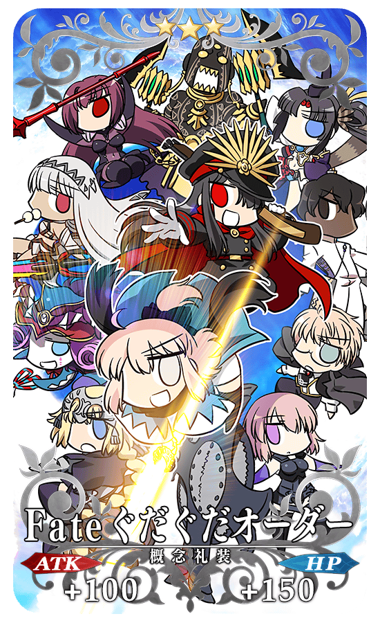 |
★★★R Fate ぐだぐだオーダー ATK 100(最大:500) HP 150(最大:750) 技能 自身的Quick卡性能＆Arts卡性能＆Buster卡性能＆星星發生率＆星星集中度＆Critical威力＆NP獲得量＆寶具威力＆弱體賦予成功率＆弱體耐性＆HP回復量各提升1%＋九十九髪茄子的掉落獲得數增加1個【『復刻:GUDAGUDA本能寺 輕量版』活動期間限定】 |